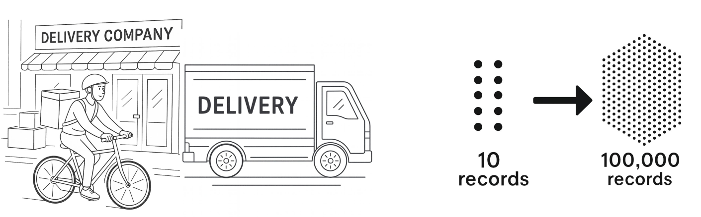

What will we learn?
100,000 delivery records
Problem: Loading all at once → runs out of memory

Solution: Work with data in batches
Three core tools:
ToTensor: converts to tensors, scales 0-255 → 0-1
Normalize: centers around 0, scales using standard deviation
Key features:
Batch size: how many samples per batch
Shuffle: randomize order each epoch
Makes training on large datasets possible
# 1. Define transforms
transform = transforms.Compose([...])
# 2. Create dataset
train_dataset = MNIST(..., transform=transform)
# 3. Create dataloader
train_loader = DataLoader(train_dataset, batch_size=64, shuffle=True)
# 4. Use in training loop
for batch in train_loader:
images, labels = batch
# train modelMore control, same functionality
Don’t call model.forward() directly
Do call model(input)
PyTorch handles the forward call and essential bookkeeping
super().__init__()?Necessary for parameter tracking
PyTorch needs to set up a system to track all learnable parameters (weights and biases)
Without it, PyTorch has nowhere to register your layers
Order matters! Don’t swap these steps.
Two critical things:
model.eval() - sets evaluation modetorch.no_grad() - disables gradient trackingFor classification: Accuracy
Count correct predictions / total predictions
nn.Modulefor batch in dataloader:model.eval(), torch.no_grad(), accuracyIn Session 2: Loss Functions and Optimizers, you learn: